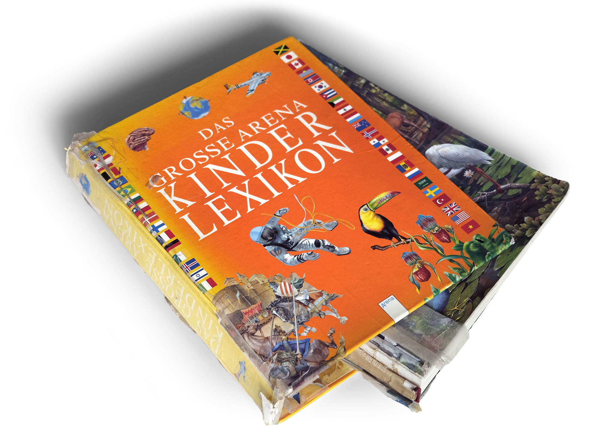
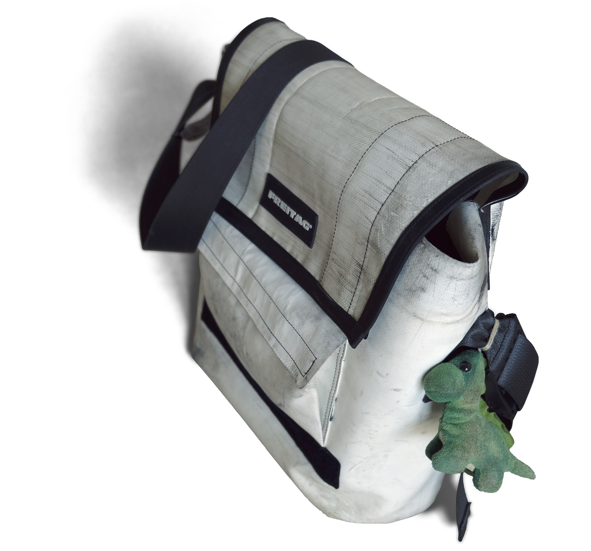

Das Grosse Arena Kinder Lexikon in der zweiten deutschen Auflage von 2006. Priska und Florian meinten im Sommer, es sei schon sehr italienisch. Auf S. 359 findet sich Athene, am 17. März 2021 stand Melanie genau gleich da.«Usnahmslos eis vode beste Spicherplätz wo chasch ha»: Mein Hirn, anders als ihre Festplatte. Letztes inhaltliches Kapitel am eifrigsten rezipiert. Zustand an sich desolat. In Relation zum Gebrauch verhältnismässig. Cover PANTONE® 15-1247 Tangerine, Rücken PANTONE® 13-0850 Aspen Gold; UV-bedingt (aber nicht garantiert). Buchblock herausgefallen, Tesaüberreste zeugen von Rettungsversuch.
Darauf wurde ich von Priska hingewiesen in der Form von Robert K. Mertons Briefsammlung. Seither habe ich dazu auch zufällig einen mediävistischen Vortrag gehört und stosse immer öfter auf das Bild; jedes Mal anders gezeichnet. Einige sehen darin schon die Entwicklung der Kunst und der Wissenschaft. Einige sehen in der Veränderung des Bildes über die Rezeptionsgeschichte einen Spiegel der jeweiligen Umgebung. Einige haben eine feste Vorstellung, andere möchten das Bild ausmerzen und entwickeln damit unabsichtlich eine neue Sichtweise, ein neues vom gleichen Bild.
Einige fragen, wie der Zwerg auf die Schulter komme, andere ob der Riese stillstehe oder läuft. Susanne Köbele hatte das Verhältnis als schillernd bezeichnet, ich sehe ein reflexives, selbstreferenzielles Moment. Was aber ist ein Schillern, wenn nicht reflektiertes Licht, das aufgrund einer fluktuierenden Umgebung kontinuierlich als Veränderung wahrgenommen wird. Unstet und ephemer in einer hartnäckigen Beständigkeit über die sich wandelnden Zeiten hinweg, Indikator sowohl des Wandels, aber auch der Ähnlichkeit der stets wiederkehrenden Fragen.
Ana- mag ich.
Pest.
Die Vorliebe hängt vom Präfix ab. Sympathie für den
Signifikant.
Vielleicht eine Manifestation meiner Tendenz, meta zu denken.
Das Wort habe ich eben erst zusammengesetzt, also fast schon frisch erfunden.
Oder gibt
es das Wort schon?
Tatsächlich ist es ein linguistisches Synonym für reflexiv oder selbstreferenziell. Sprache, die auf Sprache Bezug nimmt. Eine Äusserung in einer Situation über die sprachliche Komponente ebendieser Situation.
Ich habe ihn nicht eingeladen, aber Niklas Luhmann klopft
wieder an. Ich drehe mich vom Türspion weg, heute muss er draussen bleiben.
Ob es das Schicksal ist? Ist alles schon... vorgefertigt?
Reformiert: Ist das Schicksal ein Vorurteil?
Wie das Präfix hier.
Ich bin der Teejesus.
Die Digitaldrucker-Koryphäe.
Wenn ich
nicht da wäre, wären meine Witze nichts, worüber man lachen kann.
Mich starrt man an, einfach nur um
des Starrens Willen. Ob am Boden in einem Spiegelraum, in dem aber
nur eine Wand mit einem Spiegel bestückt ist (ausser dem kleinen über dem Waschbecken, aber der
zählt
nicht), oder aber anstatt der Prüfungsbesprechung von Michel die Aufmerksamkeit zu schenken, die sie
und
er eigentlich verdient hätten.
Ich setze niemanden unter
Druck, schon gar nicht meine Bleistifte. Was die wohl sonst für eine Mine
ziehen würden.
Wohl, weil ich der bin, der Muffensausen
kriegen würde, wenn sie es denn täten.
Also die Muffen.
Ich bin der Werkbankzerschlager, der Hängewandzertrenner, der
Betonmischer (wie bei den Profis) und der
Drahtwickler (aber nicht ‑zieher).
Auf meinem Büchergestell liegen zwei trockene Rosen und die ältere riecht immer noch, wie als ich
sie
bekommen habe.
Ich bin ein Mädchen für Alles mit Handcrème
im Etui.
Julia Blanco hängt an meiner Lampe, aber nicht emotional, sondern
physisch und im Frühjahr werde ich sie
eintopfen.
Ralf fragte mich einmal, ob ich nie eine Jugend gehabt hätte und die Praktikantin daneben lachte.
Ich
auch. Und die Antwort lautet: Mag sein (?)
Der Spiegel vor mir hatte für eine längere Zeit einen Schnauzer als ich. Wegen Jasmin. Und die
Lippen
waren von Lia.
Das Einzige, was ich aus dem Musikschulwettbewerb mitgenommen
habe, ist der Block mit Notizpapier, auf
dessen Blätter ich Zahlen schreibe.
In meinem Schrank liegt Tee, der duftet sehr gut.
Ich mag es, wenn ich Leute mag und tu es deshalb auch oft.
Nie war ich Daneli. Mit Florian Ast bin ich selten einverstanden, am ehesten sehe ich mich tatsächlich im Sepp.
Als Frederick habe ich für die harte Winterzeit Sonnenstrahlen, Düfte und Farben gesammelt, was die anderen Mäuse nicht verstanden. Ob ich noch heute etwas Frederick bin, das weiss ich nicht. Irgendwie aber lustig, dass diese Hauptrolle später immer mehr von der Bühne ins Abseits führte. Vielleicht war es das dort gesammelte Licht, das ich später auf die verschiedenen Bühnen lenkte.
Ohne Brand in Rogers Atelier, phantomhaft. Im Irrenhaus waren die Diebe Iren – ein besonderes Leben. Beinahe waren es die grossartigsten Tage des Hüters des Waldes.
, amerikanisch-apokalyptischen
und post-digital-verschwörerischen Strängen ist, sehr abstrus und kaum anschlussfähig sein muss – so verlangen ganz allgemein pop-kulturell zugängliche Inhalte von mir eine von der eigenen Erfahrung über durch Freundschaften und Medienkonsum angeeignete Realitätszugänge hinweg angeeignete Denkweise, um einen Zugang zu finden.
Die unzähligen Seiten, auf denen sich Fantasy-Welten ausbreiteten, stellten in Aussicht, dereinst die Grundfesten der Wirklichkeit erspähen zu können.
Kenne ich wie Eragon die wahre Sprache, so wird sich die Realität, die sich allen anderen so offensichtlich zeigt, vielleicht auch mir eröffnen. Dank TKKG und den drei ??? konnte ich hoffen, auf ein Indiz zu stossen, mit dem ich auch zur von der Welt um mich herum schon längst getroffenen Schlussfolgerung gelangen könnte.
Und trotz dieser Herleitungshoffnungen, rund um mich herum wurde gefühltes Innenleben zu gespürtem Aussenleben, während bei mir mangels Ersterem auch Zweiteres ausblieb. Das empfand ich intrinsisch nicht als störend, da aber draussen dieser Vorgang als absolut behandelt wurde, bildete sich eine innerlich beobachtete Abwesenheit.
Aus dem evidenten Fehlen an Gefühltem, formte sich ein emergentes Gefühl des 'Anders' – zum Glück nie ganz des 'Falsch' – in Relation zu den Meisten. Mit der Zeit fand ich genauere Worte für das 'Anders', eine Art wahre Sprache, was aus dem emergenten Gefühl eine fassbarere Realität zu machen versprach.
Dass ich für diese Realität eigene Referenzen fand und mit jemandem sogar teilen durfte, machte dieses Einschmiegen erst möglich. Und gerade, als eine gewisse Klarheit da war, erfasste uns ein Strudel an neuer Evidenz, der wohl turbulent, aber nicht beunruhigend die Realität wieder anders ordnete.
Kein theoretisches Gerüst, keine gesellschaftliche Institution, keine einzelne Blickweise kann der Welt, wie sie wirklich ist, gerecht werden. Sobald dieses Bewusstsein nicht vorhanden ist, geht die nötige Flexibilität vergessen, um produktiv an Problemen arbeiten zu können, die menschliche Ebene, ohne die der Rahmen zum Selbstzweck wird.
Jedes Modell ist eine Abstraktion, Teilchenphysik interessiert sich für die Welt auf einer anderen Ebene, als es Lokalpolitik tut, trotzdem geht es um dieselbe, auf wohl oder übel geteilte Realität.
Ansichten mitzudenken, anzuhören, aufzusuchen, die nicht die eigene sind, setzt voraus, ein Bewusstsein für die eigene Perspektive zu entwickeln.
Gleichzeitig ist es unproduktiv, auf einer Emergenzstufe zu argumentieren, auf der sich der Gegenstand der Diskussion nicht abspielt.
Egal wie nah man sich das Realitätsgewebe anschaut, immer sieht man eine unendliche Anzahl von fraktalen Falten, unendliche Möglichkeiten sich der Realität mit beliebiger Ausführlichkeit zu nähern.
Ein konkretes Bild dafür ist die Frage, wie lange die Küstenlinie einer Insel ist. Wird mit einem geraden Massstab mit Länge 1km gemessen, kommt man auf eine viel geringere Zahl, als wenn man einen 30cm langen Lineal nimmt. Der kürzere Stab lässt unheimlich viel genauere Anpassung an jede kleine Wölbung, an jeden Stein entlang des Strandes zu.
Spannenderweise verändert sich aber die Fläche der Insel, egal mit welchem Umriss, kaum. Es ist die selbe Insel. Nur wurden die Grenzen aus einer anderen Perspektive, einem anderen Abstraktionsgrad angeschaut. Die Länge der Küste existiert nicht intrinsisch, sondern ist emergent daraus, wie sie gemessen wird.
Hörspiele sind spannend, da sie in einem narrativen Mischraum existieren. Sie sind meistens nicht bloss mündliche oder vorgelesene Erzählungen, die Rollen werden tatsächlich auch durch Sprechende zum Leben erweckt, ähnlich also wie beim Theater, oder Film, während die visuelle Ebene aber ganz grundlegend nicht zu diesem Medium gehört.
Später in meinem Leben, als ich begann Frisch und Dürrenmatt zu lesen, begegnete mir das Hörspiel als Textsorte. Im radiogeprägten 20. Jahrhundert war das Schreiben von Hörspielen anscheinend lukrativ. Geschichten konnten mit Hilfe von Dialog und vielleicht einigen Foley-Geräuschen ausgetragen werden, schnell und relativ günstig produziert, auf jeden Fall im Vergleich zu Theater oder Film. Auch das Herausgeben eines Romans nimmt schnell logistische Züge an, die ein Hörspiel, solange eine Radiostation das Senden übernimmt, nicht hat.
Die Hörspiele der beiden habe ich aber tatsächlich nie gehört, immer nur gelesen, Dürrenmatt schreibt sogar explizit, dass die gedruckten Versionen literarisch gültig sind, dementsprechend aber etwas vom Medium weg überarbeitet wurden.
Es hängt wohl damit zusammen, dass mich Audio-Bücher nie richtig in den Bann genommen haben, ich funktioniere sehr gut über Lesen, während reines Zuhören, zumindest heute, weniger zu meinen Vorlieben von Literaturkonsum entspricht. Der Transfer von als zu Lesendes Geschriebenem zu Hörbarem funktioniert für mich also nicht. Was aber nur geschrieben wird, um danach umgesetzt und gehört werden zu können, das klappt für mich wieder.
Ein Beispiel dafür sind die Schreckmümpfeli des Schweizer Radios. Davon habe ich nur eine kleine Auswahl gehört, die nämlich, die als CD in der Schulbibliothek meines Untergymis standen, nicht als programmierte und zu später Stunde ausgestrahlte Radiobeiträge, sondern als konservierte, mehrmals hörbare Aufnahmen, die ich aber dem Konzept entsprechend jeweils kurz vor dem Einschlafen hörte.
Dieses spezifische Genre funktioniert für mich glaube ich so gut, weil die Abwägung, die Horrorfilme generell machen müssen – wie zeigt man visuell etwas Unheimliches, ohne die ganze Tiefe und das Potential der individuell verschiedenen Ängste zu verlieren – gar nicht erst aufkommt.
BLANCHE
VLADIMIR
AMANDA WINGFIELD
SYBIL BIRLING
VLADIMIR. Will you stop whining! I've had about my bellyful of your lamentation!
AMANDA. The only way to find out about those things is to make discreet inquiries at the proper moment.
BLANCHE. What have people been telling you about me?
AMANDA. You smoke too much.
BLANCHE. When I think of how divine it is going to be to have such a thing as privacy once more – I could weep with joy!
VLADIMIR. Time flows again already. The sun will set, the moon will, rise, and we away... from here.
BLANCHE. Eureka! Honey, you open the door while I take a last look at the sky.
VLADIMIR. Yes yes. Come on, we'll try the left first.
AMANDA. Where are you going?
VLADIMIR (without anger). It's not certain.
AMANDA (coming through the portieres). Where are you all?
BLANCHE. Guess!
MRS. BIRLING. Now stop it, you two.
Für Harry und Clary machen sich neue Welten auf in ihren alten, versteckt in Falten, eine Realität geschachtelt in eine andere. Für die beiden, wie auch für mich, verändert sich das Leben durch das Eintauchen in die andere Welt.
Globi hält im Keltenmuseum einen Torques und durch das genaue Betrachten dieses Artefakts aus einer anderen Zeit wird er in eben so eine Anders-Welt transportiert. Er trifft dort auf die mythischen, entrückten Gestalten, auf Artus, Merlin und Guinevere, lernt sie aber neu kennen, persönlich und ganz unlegendär. Wie er wieder in seine Realität zurückkatapultiert wird?
Er entdeckt auf seinem Torques, dass die sagenhafte Inschrift schon seit Beginn sein Name war, nur falsch herum gelesen.
Aus IBOLG wird GLOBI, die Erkenntnis verschlägt den Vogel wieder ins Jetzt und ich weiss, was ich 2010 noch nicht wusste, zum Beispiel, dass Globi als eine Werbefigur für das Warenhaus Globus ins Leben gerufen wurde, dass noch lange viele seiner Entdeckungsreisen von einem prä-postkolonialen Zeitgeist motiviert waren und ich diese neuen Schichten an Wissen in meine früheren Referenzen hineinfalte.
Das weiss ich aber nicht mehr, ich kann es nur noch erahnen. Im Buch sammelt Joe im Pfandladen seit seiner Ankunft bei Nacht und Nebel die Geheimnisse der Dorfleute in einem schwarzen Buch. Sie verpfänden diese, um ihre missliche Lage aufzufangen und dabei verdichtet sich Joe, seinem Gehilfen Ludlow und mir, dem Leser, das Bild eines gemeinsamen Übels, was dem Dorftyrannen in der Geschichte bald zum Verhängnis wird.
Was bei der Google-Suche aber auch aufploppt, sogar noch auf der ersten Seite der indizierten Suchergebnisse, ist codices.ch, ein Portal für Handschriftenkunde.
Ich nehme an, dass dieser Verweis den Geheimnissen verschuldet ist, mit denen ich den Google-Algorithmus betraut habe, eine Art schwarzes Buch unserer Zeit. Nur dass dahinter nicht Joe die Geheimnisse bewahrt und daraus seine Schlüsse zieht, sondern eher das Pendant zum Dorftyrannen.

‑O
‑B
‑I.
Er ist immer dabei, manchmal stelle ich ihn Leuten vor. Bobi sei das. B‑O‑B‑I.
Nicht mit Ypsilon. Auch kein Doppel-B.
Mara habe das so vorgeschlagen, aber bekommen hätte ich ihn von Benji. Anfang Jahres hat er gezügelt.
Also Bobi meine ich.
Von seinem alten Zuhause hatte sich der Tragegurt gelöst.
Everywhere at the End of Time ist ein Album-Projekt, das über sechseinhalb Stunden aus Ballroom-Musik schöpfend eine fortschreitende Klanglandschaft erarbeitet, die dem Ablauf einer Demenz nachempfunden ist. In voller Länge habe ich es zweimal gehört.
Der Mort-Iceberg ist ein Projekt, das in Filmen, Serien und anderen Medien des Studios Dreamworks einem Charakter aus den Pinguinen von Madagaskar nachspürt, alle Schnipsel zusammenträgt, Zusammenhänge herausarbeitet und an der grossen zusammenhängenden Universaltheorie bastelt, dass dieser scheinbar des Witzes wegen eingesetzte, süsse Charakter mit einigen schrulligen Macken eine leibhaftige Manifestation des Todes vom Dreamworks-Universum sei.
Ich wage mich nicht nachzuschauen, wie viele Stunden diese Theorien vereint verschlingen. Auch die Spongebob-Skin-Theory findet in den verschiedensten Staffeln und Folgen des Kindercartoons Anspielungen auf einen äusserst makaberen und beinahe schon existenziellen Subtext.
Ana- mag ich.
Pest.
Die Vorliebe hängt vom Präfix ab. Sympathie für den
Signifikant.
Vielleicht eine Manifestation meiner Tendenz, meta zu denken.
Das Wort habe ich eben erst zusammengesetzt, also fast schon frisch erfunden.
Oder gibt
es das Wort schon?
Tatsächlich ist es ein linguistisches Synonym für reflexiv oder selbstreferenziell. Sprache, die auf Sprache Bezug nimmt. Eine Äusserung in einer Situation über die sprachliche Komponente ebendieser Situation.
Ich habe ihn nicht eingeladen, aber Niklas Luhmann klopft
wieder an. Ich drehe mich vom Türspion weg, heute muss er draussen bleiben.
Ob es das Schicksal ist? Ist alles schon... vorgefertigt?
Reformiert: Ist das Schicksal ein Vorurteil?
Wie das Präfix hier.
BLANCHE
VLADIMIR
AMANDA WINGFIELD
SYBIL BIRLING
VLADIMIR. Will you stop whining! I've had about my bellyful of your lamentation!
AMANDA. The only way to find out about those things is to make discreet inquiries at the proper moment.
BLANCHE. What have people been telling you about me?
AMANDA. You smoke too much.
BLANCHE. When I think of how divine it is going to be to have such a thing as privacy once more – I could weep with joy!
VLADIMIR. Time flows again already. The sun will set, the moon will, rise, and we away... from here.
BLANCHE. Eureka! Honey, you open the door while I take a last look at the sky.
VLADIMIR. Yes yes. Come on, we'll try the left first.
AMANDA. Where are you going?
VLADIMIR (without anger). It's not certain.
AMANDA (coming through the portieres). Where are you all?
BLANCHE. Guess!
MRS. BIRLING. Now stop it, you two.
Als Frederick habe ich für die harte Winterzeit Sonnenstrahlen, Düfte und Farben gesammelt, was die anderen Mäuse nicht verstanden. Ob ich noch heute etwas Frederick bin, das weiss ich nicht. Irgendwie aber lustig, dass diese Hauptrolle später immer mehr von der Bühne ins Abseits führte. Vielleicht war es das dort gesammelte Licht, das ich später auf die verschiedenen Bühnen lenkte.
Ohne Brand in Rogers Atelier, phantomhaft. Im Irrenhaus waren die Diebe Iren – ein besonderes Leben. Beinahe waren es die grossartigsten Tage des Hüters des Waldes.